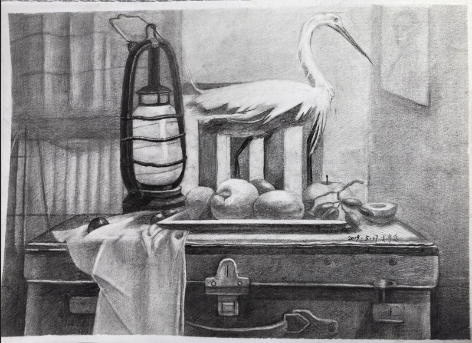

| Back Homepage | - Experience - In primary school | - Current insights |
| next | ||
In elementary school, I took my first drawing class, which marked the beginning of my systematic study of drawing. For me now, the changes in light and shadow are incredibly elegant and beautiful.,but for a primary school student, the first drawing class meant nothing more than repetitive and boring line drawing.
Therefore, after going through line drawing, shape drawing, I was able to complete a complete drawing. From geometric stone sculptures to still life, from copying to life drawing,
|
||
|  | ||
| Back | During primary school |
In elementary school, I took my first drawing class, which marked the beginning of my systematic study of drawing. For me now, the changes in light and shadow are incredibly elegant and beautiful.,but for a primary school student, the first drawing class meant nothing more than repetitive and boring line drawing.
Therefore, after going through line drawing, shape drawing, I was able to complete a complete drawing. From geometric stone sculptures to still life, from copying to life drawing,
|
|